El siglo XX , último del segundo milenio de la era cristiana , morirá el 31 de diciembre , y con él se habrán ido a la sepultura un grupo de ilustres deportistas que durante la centuria dieron lustre a las distintas disciplinas , tanto en España como en el resto del mundo.
Descanse en paz el siglo , el milenio y aquellos que con sus gestas hicieron vibrar al resto de la humanidad.
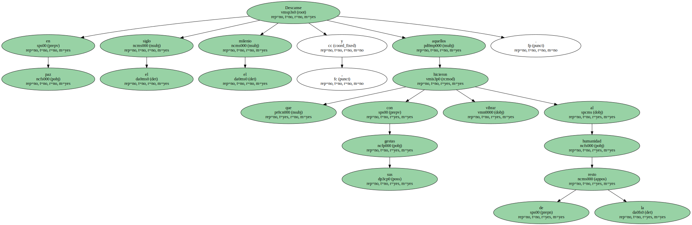Quizá , de entre todas , la muerte de Emil Zatopek , la locomotora humana , sea la más sentida.
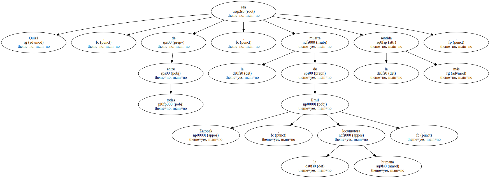A los 78 años , esta leyenda llegó a la vía muerta.
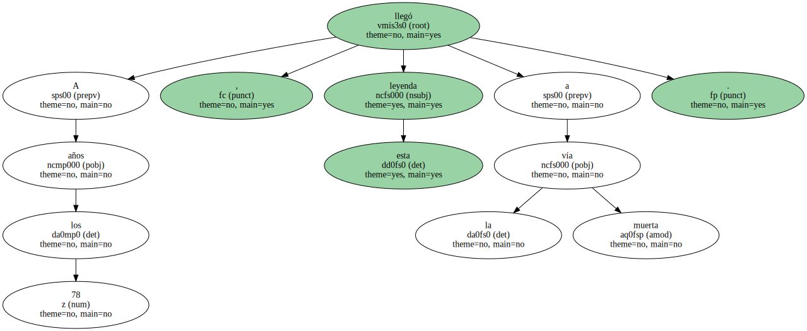No había más madera para alimentar la caldera de un superhombre capaz de ganar 5.000 , 10.000 y maratón en unos mismos Juegos.

Zatopek no pudo columbrar el siglo XXI y un derrame cerebral se lo llevó de entre los vivos el 22 de noviembre , para , ya muerto , recibir honores de Jefe de Estado.
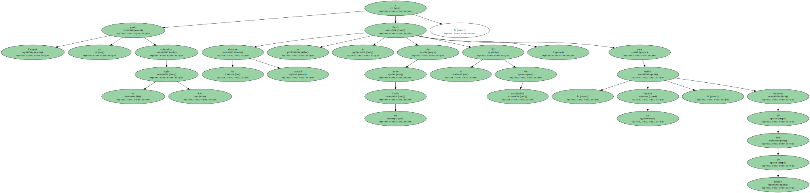Unos meses antes , el 23 de febrero , falleció otra gloria del deporte.
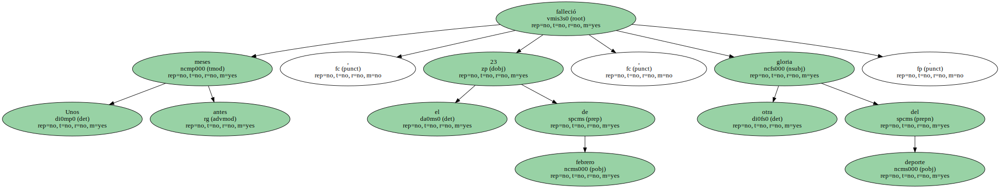A los 85 años Sir Stanley Matthews , el primer " balón de Oro " de la historia y el primer futbolista nombrado Caballero de la Orden del Imperio británico.
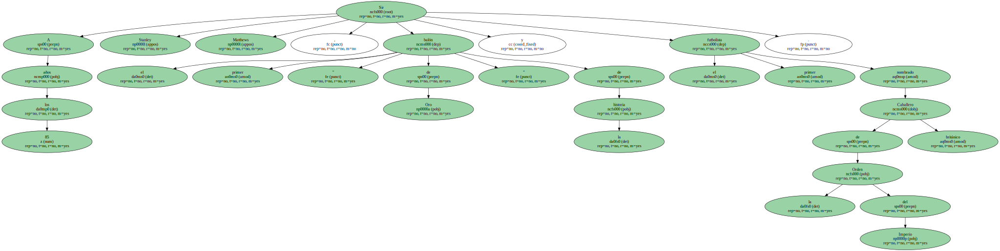Dicen que honró el título , primero , antes de oficializarlo , en los terrenos de juego , y después , en la cancha de la vida , en la que dio ejemplo de deportividad.
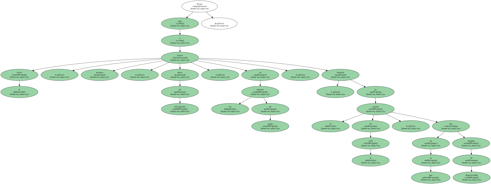Abanderado de la lucha contra el tabaco , vivió de forma espartana y siguió toda su vida una estricta dieta alimenticia.

El estadounidense Don Budge , el primer jugador de tenis que ganó un torneo de Grand Slam , también abandonó el mundo de los vivos a primeros de año.
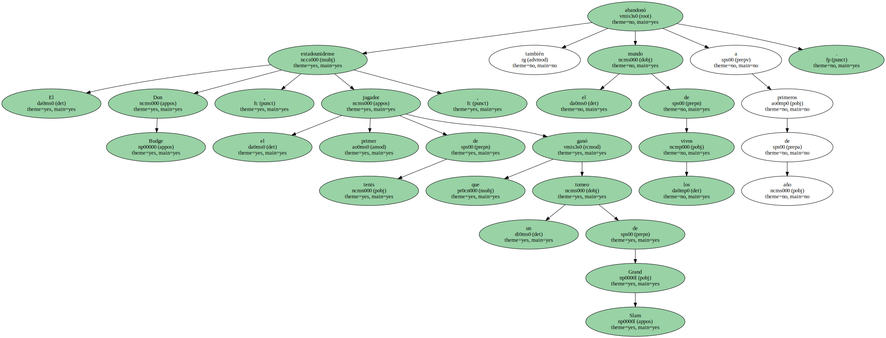Le falló el corazón a los 84 años , pero para doblegar a este atleta hizo falta que poco antes sufriera un accidente de coche en las montañas Pocono de Pensilvania que le produjo la rotura de la pierna izquierda y heridas internas , que terminaron por minar su resistencia.
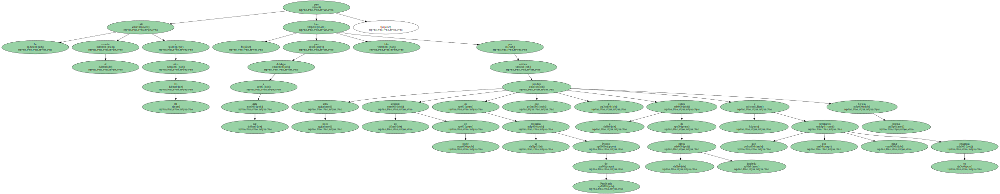El 5 de mayo murió Gino Bartali , el ciclista que con su triunfo en el Tour'48 evitó una guerra civil en Italia.
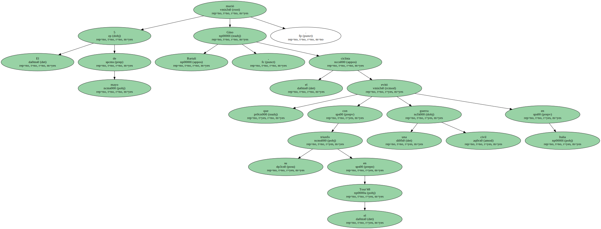Fue el hombre que rivalizó con Fausto Coppi y cuyos duelos dividieron a Italia , pero no a ellos , que incluso dieron lecciones al mundo ayudándose , aunque sin dirigirse la palabra.
Lo cortés no quita lo valiente.

Tenía 86 años cuando se le paró el corazón en su casa de Florencia.
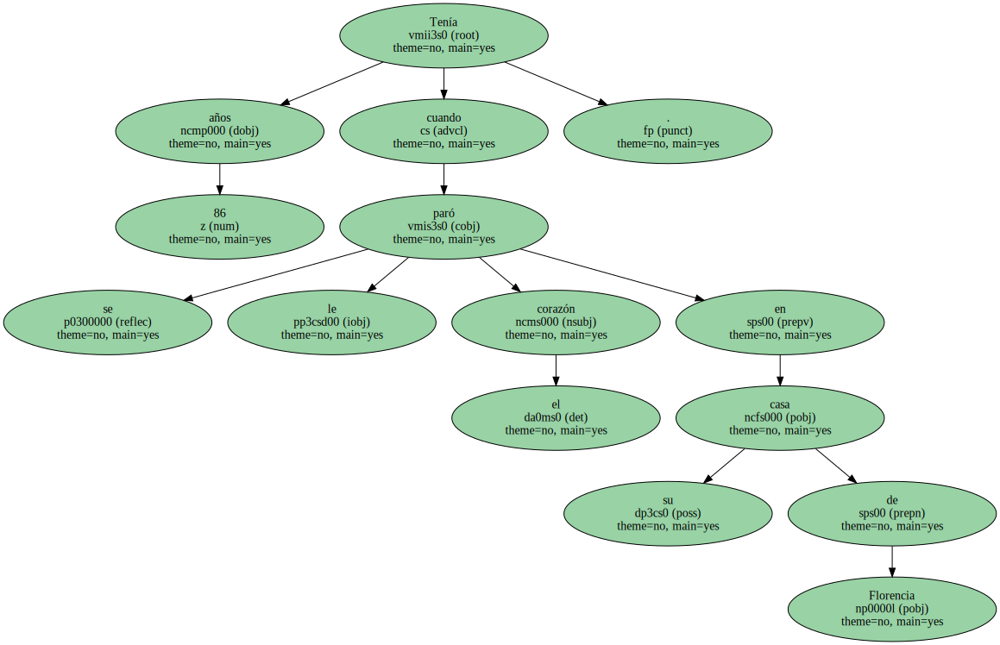Rinaldo Martino fue otro gran futbolista argentino de la década de los 40 al que en noviembre de este año le llegó la fecha de caducidad.
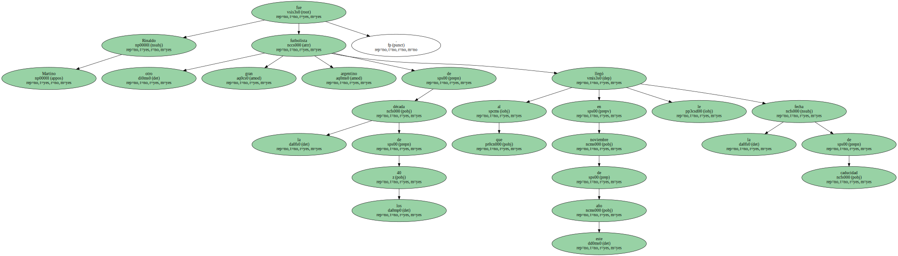Tenía 79 años y un largo y exitoso pasado en su país con el San Lorenzo de Almagro y en Italia con el Juventus.
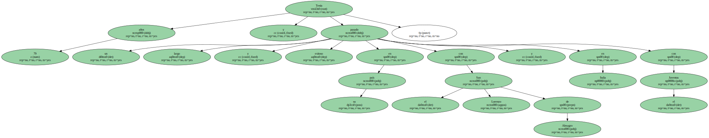Obviamente , también con el combinado nacional.
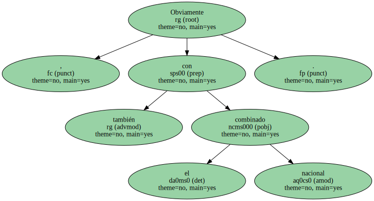El mismo camino siguió Domingos da Guia , el conocido como mejor defensa de Brasil , que murió a los 87 años.
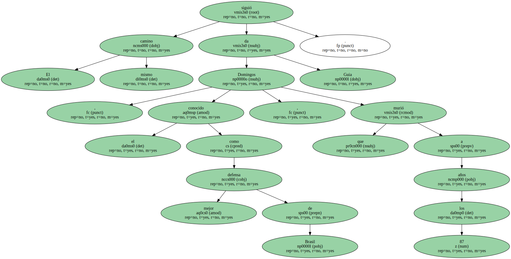En España se despidieron dos de los seleccionadores que más tiempo estuvieron en sus respectivos cargos de seleccionadores de dos de los deportes que , después del fútbol , más éxitos han dado al deporte nacional : el baloncesto y el balonmano.
Antonio Díaz Miguel fue el artífice del mayor logro internacional del baloncesto.
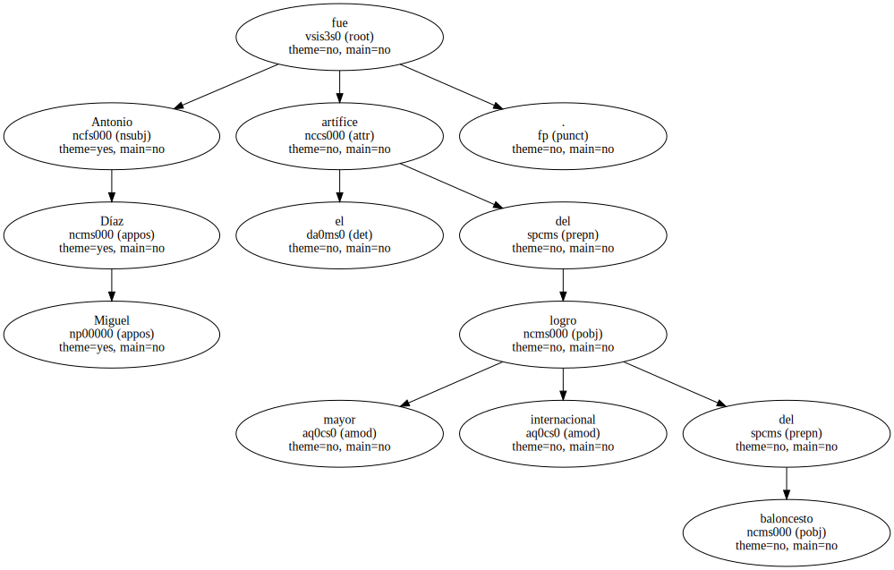Con él , y un brillante grupo de jugadores , España se alzó con la medalla de plata en los Juegos de Los Angeles'84 , obviamente por detrás del país anfitrión.
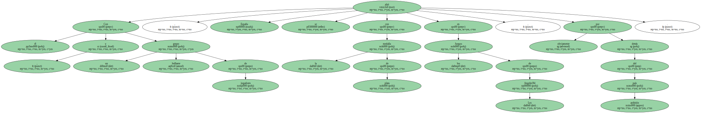Díaz Miguel murió en febrero y su muerte inundó de lágrimas a la familia del baloncesto.
Y el de balonmano , Domingo Bárcenas , maestro de entrenadores , aunque con un pobre historial de logros internacionales , detuvo el reloj de su vida en marzo , a los 73 años y después de una grave enfermedad.
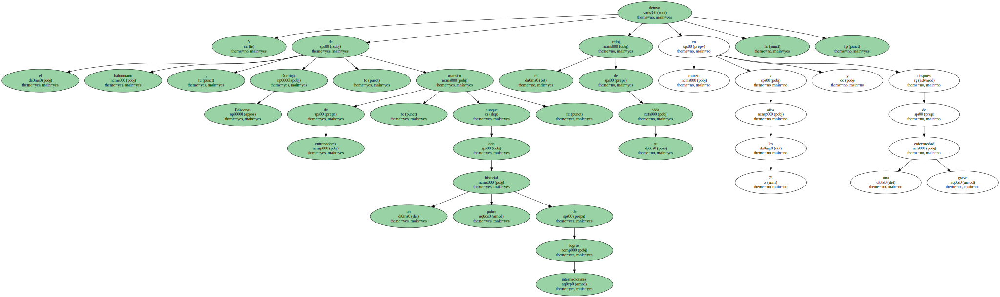Hondo pesar causó la muerte de Peter Dubovsky , que a pesar de no ser español , ni siquiera de haber muerto en España , fue aquí donde desarrolló su carrera deportiva.
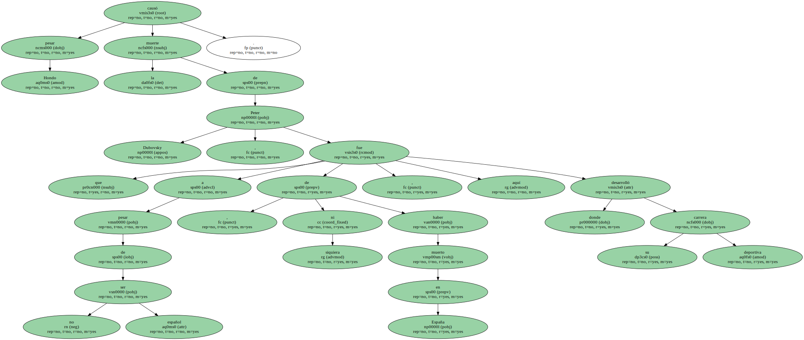El futbolista eslovaco estaba de vacaciones en Tailandia cuando sufrió un trágico accidente en una visita a las cataratas de la isla de Ko Samui.
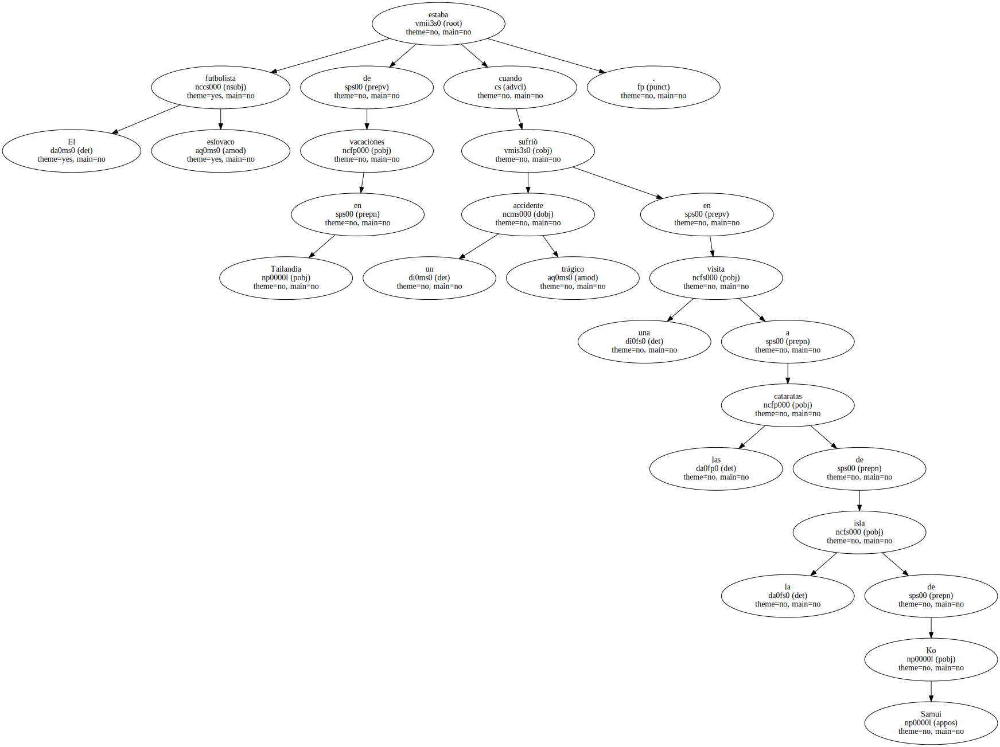En ciclismo hubo que lamentar la muerte de Saúl Morales , embestido por un camión durante la disputa de la séptima etapa de la Vuelta Ciclista a Argentina.
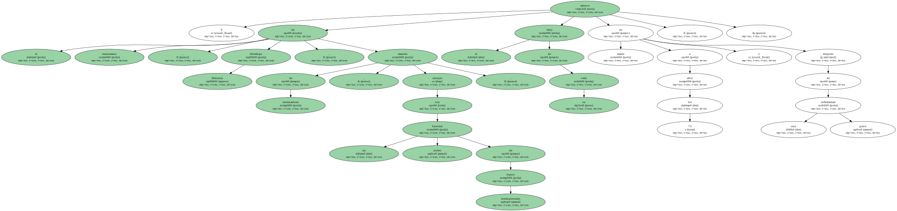Tras dos paros cardiacos Morales no pudo superar el trance.
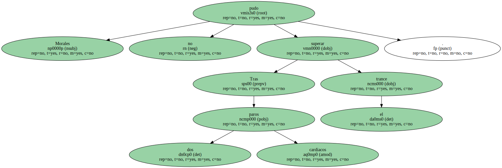Los juegos Olímpicos de Sydney , inaugurados con gran brillantez el 15 de septiembre por el presidente Samaranch , se tiñeron de luto por la muerte de la esposa del dirigente , que tuvo que regresar a Barcelona entre las lágrimas de tristeza y la alegría de unos JJ.OO. que levantaron su telón con una de las ceremonias más espectaculares de la historia.
La bandera del COI bajó a media asta y los crespones rindieron homenaje a la mujer del hombre que encabezó la revolución en el olimpismo moderno.
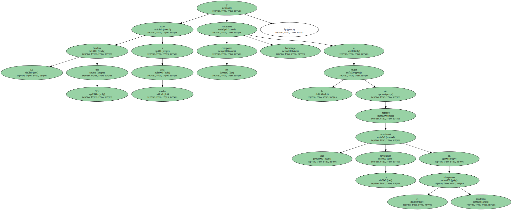Unos días antes , el atleta nigeriano de 22 años Hyginus Anugo , que se encontraba en la ciudad austral a la espera de competir en los 400 metros , fue atropellado por un coche cerca del anillo olímpico , y murió a consecuencia de las heridas.
Hyginus no pudo hacer realidad un sueño , lo contrario que Edie Payne , ex atleta australiana que participó en los JJ.OO. de Amsterdam'28 , y que fue la encargada de inaugurar la villa olímpica de Sydney.
Edie , con 94 años , y aunque enferma , tuvo tiempo de ver los Juegos , pero el 9 de octubre su corazón se detuvo para siempre.
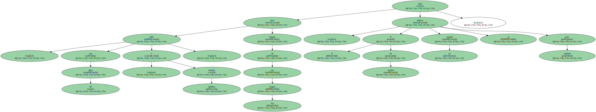Año , siglo y milenio viejos , el 1 de enero muertos , pero ellos sólo son fechas , números inanes.
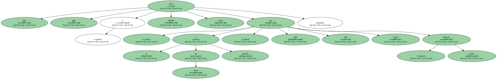Los otros , los que fueron , ya son leyendas.
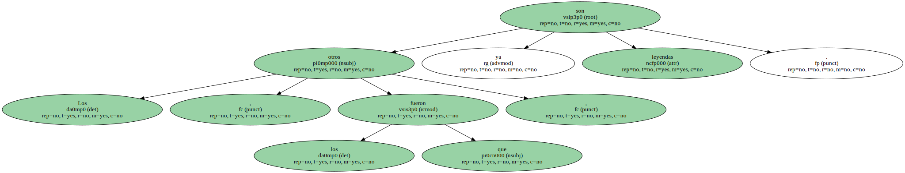Hitos de enciclopedia.
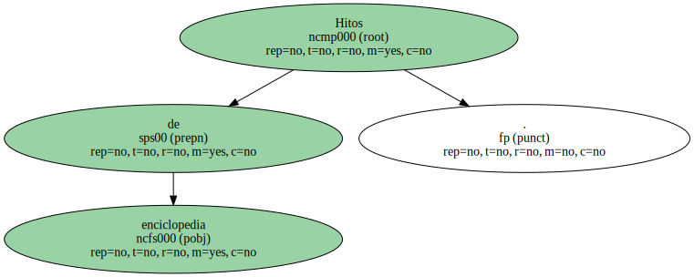